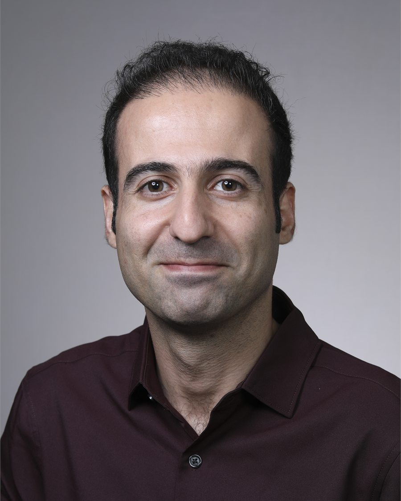

People
Who is in the lab
The lab opened at Tennessee State University in January 2026 and is recruiting its first graduate students. Below is the principal investigator, the students he has previously advised, and the collaborators this work is built with.

Koorosh Azizi, Ph.D.
Principal Investigator · Assistant Professor
Koorosh Azizi is an Assistant Professor in the Department of Civil and Architectural Engineering at Tennessee State University, where he directs the Urban Hydrosystems & Resilience Lab. His research examines how infrastructure, human behaviour and institutions interact to shape the reliability and equity of urban water and flood-risk systems.
He came to TSU in January 2026 from The University of Texas at Austin, where he was a postdoctoral fellow jointly in the Jackson School of Geosciences and the LBJ School of Public Affairs — a joint appointment that reflects how he works, with one foot in hydrologic modelling and one in policy and governance. Before that he was a postdoctoral research scholar in the School of Sustainability at Arizona State University, studying urban drinking-water transitions. He completed his Ph.D. in Civil and Environmental Engineering at The University of Memphis in 2022 as a Herff Graduate Fellow, working with residents in North Memphis on community-based characterisation of urban flooding. He holds an M.S. from Shahid Beheshti University and a B.S. from Isfahan University of Technology.
He teaches hydrology, fluid mechanics, hydraulic engineering, and water and wastewater engineering at TSU, and reviews for around twenty journals in water resources, hydrology and environmental systems.
Methods and tools
- SWMM · PCSWMM
- HEC-RAS · HEC-HMS
- IBER · FLO-2D
- ArcGIS · QGIS
- R · Python · MATLAB · Julia
- Agent-based modelling
- System dynamics
- Network analysis & ERGM
- Interviews & focus groups
Current openings
The lab is recruiting its first students.
Rather than list placeholder profiles, this page says plainly where things stand: the lab is new, and graduate and undergraduate researchers who join now will shape what it becomes. The Join Us page sets out what is available, what background helps, and exactly how to get in touch.
What new students work on
Roadway flooding and emergency access in Nashville; green stormwater infrastructure adoption and maintenance; flood-insurance protection gaps; and the governance networks that connect the agencies responsible for all three.
Useful backgrounds include civil and environmental engineering, geography and GIS, data science, planning, and the environmental social sciences.
Mentorship
Students previously advised
Nine students supervised or co-supervised at The University of Texas at Austin, Arizona State University and The University of Memphis, before the lab opened at TSU.
-
Yuer Wang — Ph.D. The University of Texas at Austin, LBJ School of Public Affairs · qualitative and quantitative methods in environmental scienceFall 2024 – present
-
Emery Bell — B.S. The University of Texas at Austin, Jackson School of Geosciences · GIS analysis of risk impactsSpring 2025 – Spring 2026
-
Sara Steele — B.S. The University of Texas at Austin, Jackson School of Geosciences · understanding precipitation patternsFall 2024 – Spring 2025
-
Adam Wiechman — Ph.D. Arizona State University, School of Sustainability · urban water systems and dynamical systemsFall 2022 – Spring 2024
-
Sara Alonso Vicario — Ph.D. Arizona State University, Civil Engineering · hydrological analysisFall 2022 – Spring 2024
-
Francesca Federico — Ph.D. Arizona State University, Sustainability · risk sharing and climate insurance programmesSpring 2023 – Spring 2024
-
Karissa Gund — M.S. Arizona State University, Civil Engineering · hydrological variability and flow regimesFall 2022 – Fall 2023
-
Nischal Kafle — Ph.D. The University of Memphis, Civil Engineering · urban flood management and green infrastructureFall 2021 – Fall 2023
-
Samin Khorram — Ph.D. The University of Memphis, Civil Engineering · watershed modellingFall 2021 – Fall 2023
Collaborators
Who this work is done with
Recent co-authors and project partners. Full author lists for every paper are on the publications page.
Tennessee State University
Deo Chimba (transportation engineering) · Amber Spears
The University of Texas at Austin
R. Patrick Bixler · Paola Passalacqua · Dev Niyogi · Bridget Scanlon · Hamid Dashtian · Yuer Wang
Arizona State University
Margaret Garcia · John M. Anderies · Adam Wiechman · Sara Alonso Vicario
Elsewhere
George M. Hornberger (Vanderbilt) · Elizabeth A. Koebele (Nevada, Reno) · Jacopo Baggio (Central Florida) · Aaron Deslatte (Indiana) · Claudio I. Meier (Memphis) · Paul D. Bates (Bristol)